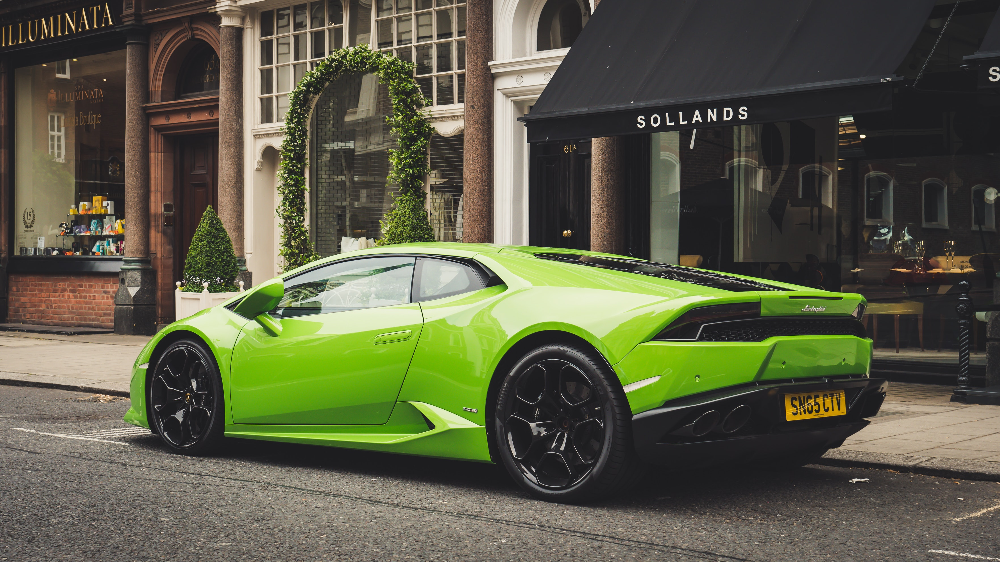

Posting Teratas
Tentang Lambhorghini
-
Lambhorgini
Automobili-Lamborghini S.p.A., sering disebut Lamborghini adalah sebuah pembuat mobil di Italia. Perusahaan ini didirikan oleh Ferruccio Lamborghini pada tahun 1963, dengan tujuan untuk menghasilkan mobil grand wisata yang dapat bersaing &npbsp;dengan mobil yang telah ada dipasaran terlebih dahulu seperti Ferrari. Model pertama perusahaan Lamborghini dirilis pada pertengahan tahun 1960, kemudian dicatat untuk perbaikan, kekuasaan, dan kenyamanan. Lamborghini mendapat banyak pujian pada tahun 1966. Setelah beberapa dekade, masa sulit menimpa perusahaan di pertengahan tahun 1970-an, seperti penjualan anjlok karena krisis moneter dunia 1973 dan krisis minyak. Setelah melewati masa kebangkrutan dan tiga kali perubahan kepemilikan, Lamborghini menjadi anak perusahaan dari Chrysler pada tahun 1987. Kurangnya keberhasilan Lamborghini &npbs; terus berlanjut sampai tahun 1990-an, sampai perusahaan itu dijual pada tahun 1998 kepada Audi, anak perusahaan dari Grup Volkswagen, sebuah Perusahaan otomotif Jerman. Kepemilikan Audi menandai awal dari sebuah periode stabilitas dan peningkatan produktivitas untuk Lamborghini, dengan penjualan meningkat hampir sepuluh kali lipat selama tahun 2000-an, memuncak pada rekor penjualan pada tahun 2007 dan 2008. krisis moneter dunia pada akhir tahun 2000-an berdampak negatif terhadap pembuat mobil mewah di seluruh dunia, dan melihat penjualan Lamborghini turun kembali ke tingkat pra-2006.